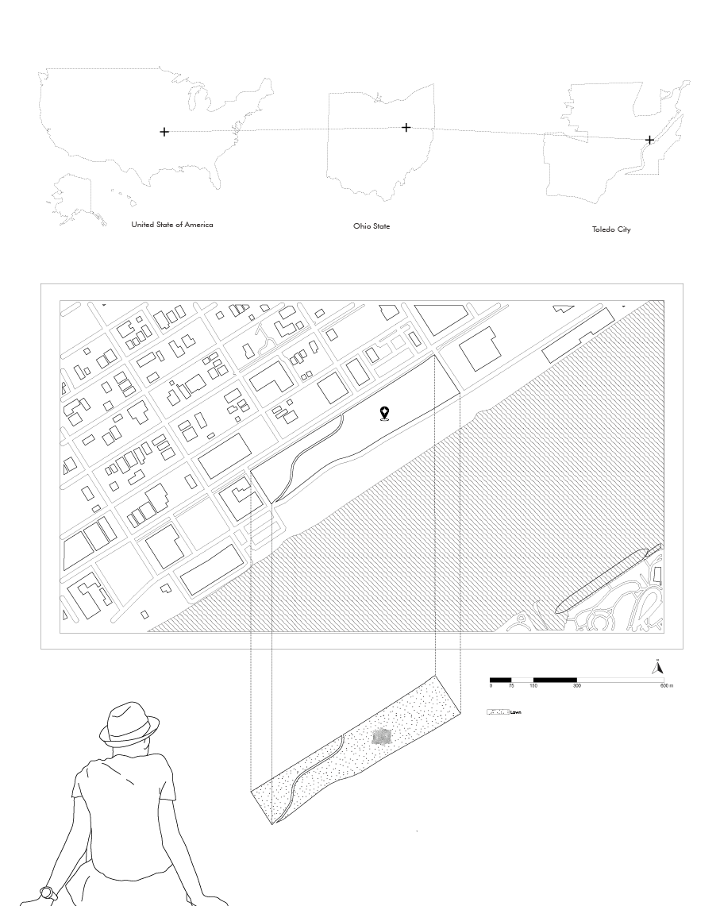
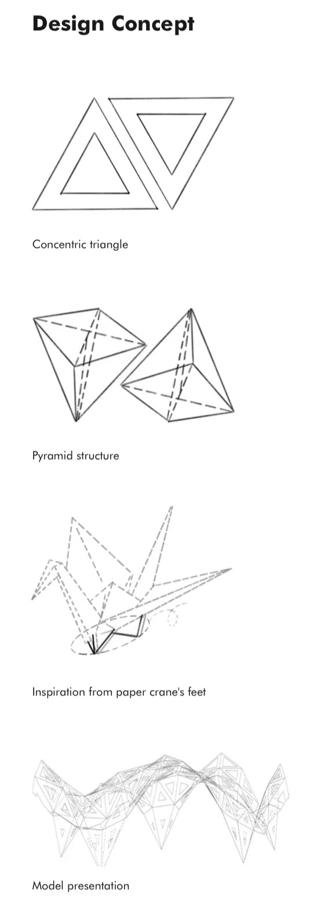
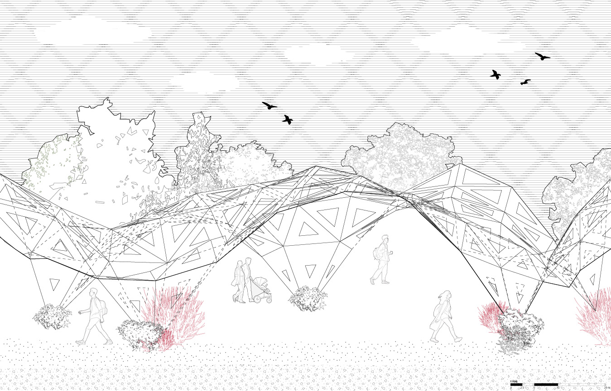

Architecture
Green Shell
My passion for architecture stems from the integration of organic morphology, technological innovation, and public welfare. This philosophy is materialized in "Green Shell," a parametric eco-pavilion designed for Toledo, Ohio. Beyond formal exploration, this project is a conscious act of placemaking, harmoniously blending art and nature to offer an urban oasis where visitors can experience the dynamic interplay of light, shadow, and open space.

Site Context
Inspired by Georgia Tech architecture lecturer Marco Ancheita's belief that design must deeply interact with its site, "Green Shell" acts as a responsive organism. The pavilion is strategically situated in Toledo, creating a localized microclimate that breathes life into the urban fabric.
Algorithmic Generation
Developed using Rhino and Grasshopper, the project utilizes generative algorithms to construct a complex triangular shell structure. The continuous surface is populated with nodes and transformed into an intricate network of hollowed triangular panels, acting as a porous canopy that filters sunlight and nourishes the native greenery below.

